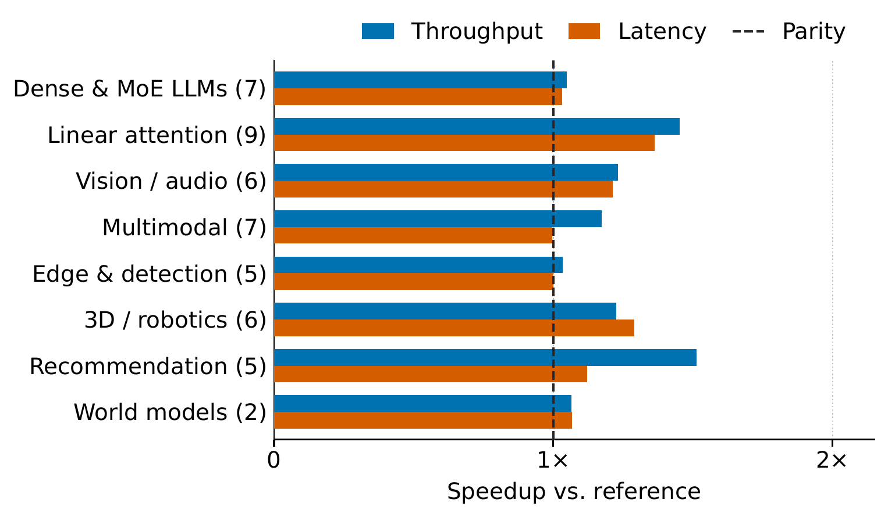
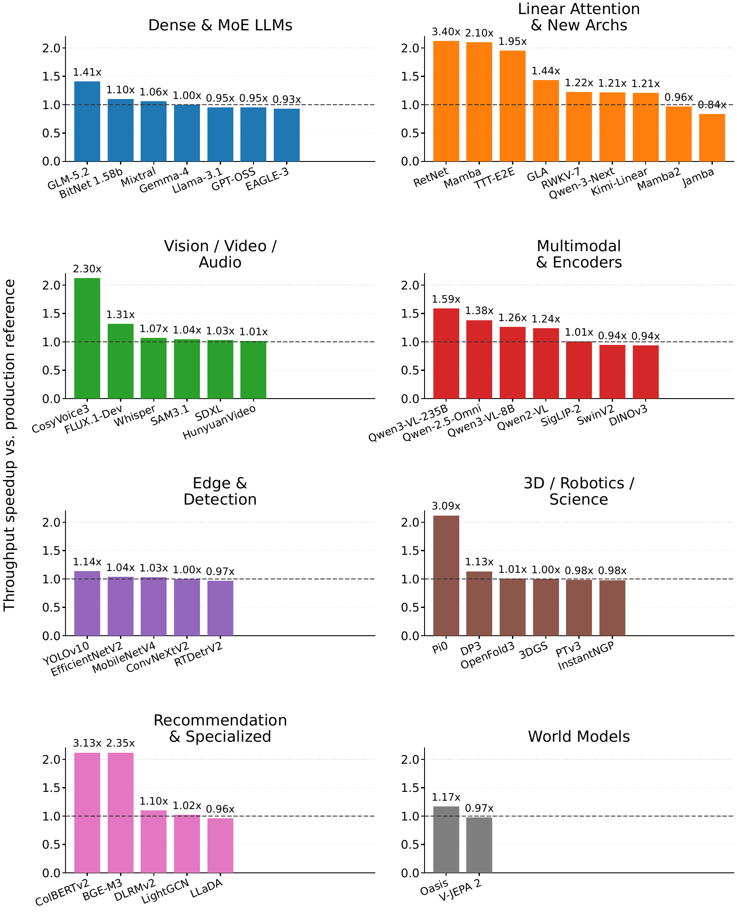
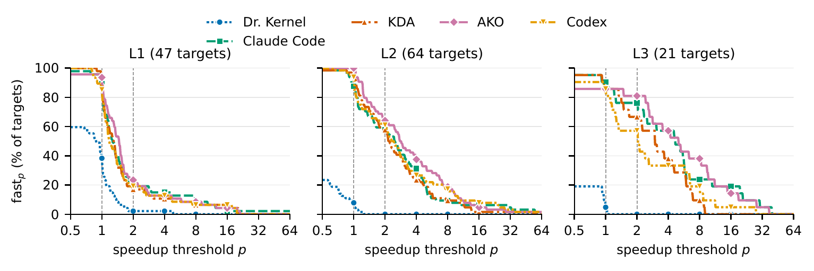
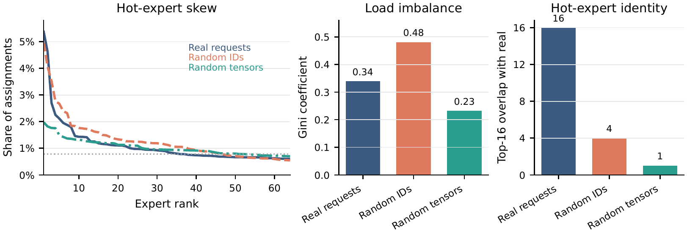

LLM-based agents for GPU kernel generation are advancing rapidly, but the benchmarks they optimize against evaluate kernels in isolation, with synthetic inputs and weak baselines, rewarding sandbox speedups that break or vanish in real inference systems.
We introduce FastKernels, a benchmark of 384 tasks drawn from 47 representative architectures across 8 categories, whose kernels suffice to reimplement 94.6% (472/499) of HuggingFace Transformers architectures with outputs matching the native implementations. Each task mirrors the interface of the corresponding production module and is scored against the kernels production frameworks ship. Tasks form a compositional hierarchy, from primitives to full models, in which higher-level modules import lower-level ones.
Candidates are scored at the kernel level and end to end inside the models they come from, on the production execution path. MacroEval aggregates calibrated correctness, coverage, and speedup into a leaderboard. Seeding it with five representative agents (6,900 agent-hours), we find that kernel-level speedups of 1.6–6.6× shrink to at most 1.25× end to end, only 20% of winning kernel sets run correctly as-is, and kernel-level scores mis-rank agents: Claude Code matches or beats KDA at every level in isolation, yet KDA scores 3× higher end to end.
LLM-based kernel-generation agents now achieve strong scores on isolated benchmarks, with state-of-the-art systems autonomously compiling, profiling, and refining CUDA or Triton code. Yet these gains often fail to transfer into production inference frameworks such as vLLM and SGLang: kernels that score well in sandboxes routinely regress once they encounter real serving interfaces, compilation stacks, and workloads.
The root cause is benchmark–production misalignment. Current benchmarks rely on synthetic inputs, single-GPU isolated kernels, simplified interfaces, and independent task levels that do not compose into full inference pipelines. They therefore reward kernels that are fast in isolation but brittle in deployed systems, hiding interface mismatches, compilation-stack conflicts, and correctness degradation that only appears at model scale.
FastKernels closes this gap by scoring every candidate inside the models its tasks come from, on the production
execution path (continuous batching, chunked prefill, CUDA graphs, torch.compile, tensor parallelism),
and by giving each task the interface of the corresponding production module so winning kernels transfer into vLLM and SGLang.
384 tasks from 47 architectures across 8 categories, from dense and MoE LLMs and SSMs to vision, audio, robotics, 3D, recommendation, and world models. Each task uses a production module interface, and speedups are measured against the kernels that library ships.
Primitives feed fused operators, which feed layers and full models. The hierarchy exposes composition effects: 37% of the agents' L3 winners break once their own lower-level kernels are active, and regenerating them on frozen lower-level winners yields 80 correct L3 winners instead of 45.
Kernel-level scoring uses captured production shapes. Collectives run on real tensor-parallel groups, and every candidate is also scored end to end inside full models on the production path, including compilation-stack effects.
MacroEval ranks agents by calibrated correctness, coverage, and end-to-end speedup across model families. In the seed evaluation, kernel-level speedups of up to 6.6× shrink to at most 1.25× end to end, and kernel-level scores mis-rank agents.
FastKernels organizes 384 tasks into four levels of increasing scope: 108 L1, 155 L2, and 74 L3 kernel tasks, shared across architectures, plus 47 end-to-end L4 models. Higher-level baselines import lower-level modules, so an agent can reuse an optimized linear operator inside an MLP or transformer block. In standalone mode each candidate is benched over production children; in composed mode every candidate file is active at once. The gap is the composition effect.
Individual operations: attention variants (GQA, MLA, sliding-window), normalizations (RMSNorm, LayerNorm), activations (SwiGLU, GeGLU), positional encodings (RoPE, ALiBi), and quantization/dequantization routines.
Multi-operation kernels representing natural fusion opportunities as they arise in real models: residual-add + RMSNorm + quantization, attention + output projection, MoE gate + dispatch + expert computation.
Complete architectural blocks: transformer decoder layers, SSM scan blocks, MoE layers with routing, cross-attention layers, and vision encoder stages.
Full model inference paths evaluated as integrated systems. The 47 L4 architectures are the end-to-end set; the shared L1–L3 kernels cover most operators across those models, from 1.58-bit through FP32.

End-to-end speedup by category on B200. Each bar is the geometric-mean speedup of FastKernels over the production reference for that category (architecture count in parentheses). The dashed line is parity.
Before any agent is scored, every architecture is checked against the production framework for its family (vLLM and SGLang for serving, diffusers for SDXL, FLA for linear attention, timm for vision encoders, and the corresponding upstream repositories elsewhere). On the full set—47 scenarios, 184 workloads, tensor parallel 1–8—gains concentrate in linear attention (1.45× throughput) and recommendation (1.51×). The other categories sit near parity. References are pinned per release and GPU; the LLM rows use vLLM 0.26.0.

Per-architecture throughput speedup on B200, grouped by category. Bars above the axis limit are clipped and labeled; the dashed line is parity.
The largest throughput gains are on architectures whose reference is a research repository or a non-serving library: RetNet 3.40×, ColBERTv2 3.13×, Pi0 3.09×, BGE-M3 2.35×, and CosyVoice3 2.30×. Mainstream LLM serving stays at parity with the hardened frameworks (Llama-3.1 0.95×, Mixtral 1.06×, GPT-OSS 0.95×).
Five agents optimize every L1–L3 operator captured from the default set on B200: 47 L1, 64 L2, and 21 L3 targets drawn from 11 models that span all 8 categories. The agents are Dr. Kernel (an RL-trained KernelBench model), KDA and AKO (long-horizon harnesses from winning MLSys 2026 FlashInfer contest entries), and Claude Code and Codex, the coding agents those harnesses build on. The campaigns total 6,900 agent-hours and 42B tokens.
Each agent's independent and sequential winner sets are then deployed into the 11 models and run on the production path. If a set crashes a model or corrupts its outputs, the offending kernel is dropped and the model is re-run. The first subset that runs correctly is the deployable subset. MacroEval ranks that subset; the last column is how many models run when every kernel-level winner is swapped in unchanged.
| Agent | Mode | Valid | Coverage | Correctness | Speedup | Score | Rank | As-is |
|---|---|---|---|---|---|---|---|---|
| KDA | Independent | 11/11 | 1.00 | 0.98 | 1.13× | 1.11 | 1 | 4/11 |
| KDA | Sequential | 11/11 | 1.00 | 0.98 | 1.04× | 1.03 | 2 | 6/11 |
| AKO | Sequential | 9/11 | 0.83 | 0.82 | 1.25× | 0.85 | 3 | 2/11 |
| Dr. Kernel | Independent | 9/11 | 0.75 | 0.85 | 0.98× | 0.63 | 4 | 2/11 |
| Dr. Kernel | Sequential | 9/11 | 0.75 | 0.75 | 0.99× | 0.55 | 5 | 2/11 |
| Codex | Sequential | 8/11 | 0.71 | 0.71 | 1.10× | 0.55 | 6 | 1/11 |
| AKO | Independent | 7/11 | 0.56 | 0.65 | 1.15× | 0.42 | 7 | 1/11 |
| Claude Code | Independent | 6/11 | 0.52 | 0.61 | 1.09× | 0.35 | 8 | 2/11 |
| Claude Code | Sequential | 7/11 | 0.56 | 0.55 | 1.11× | 0.34 | 9 | 1/11 |
| Codex | Independent | 5/11 | 0.33 | 0.33 | 0.96× | 0.11 | 10 | 1/11 |
End-to-end MacroEval on the default set (B200). Speedup is Smacro at λ = 0.5. Score is speedup × correctness × macro-coverage. As-is is models that run correctly with the full winner set unchanged.
Swapped in unchanged, only 22 of 110 winner-set deployments run correctly (about 20%). Compilation-stack conflicts and crashes on engine shapes the kernel bench never produced account for 86% of the drops with an identified cause. Even after those kernels are dropped, end-to-end speedups stay in 0.96–1.25× despite kernel-level speedups of up to 6.6×. Gains concentrate where the rewritten kernels dominate runtime (up to 2.2× on YOLOv10, 1.7× on OpenFold3, 1.5× on GLA), while LLM serving stays within 6% of the production kernels. Sequential generation raises AKO and Codex from 1.15× and 0.96× to 1.25× and 1.10×.
Kernel-level scores mis-rank the same agents. In isolation, Claude Code matches or beats KDA on correctness and speedup at every level (L3: 20 vs. 20 correct, 4.74× vs. 3.05×), yet KDA's MacroEval score is 3× higher (1.11 vs. 0.35). The gap is deployability: all 11 of KDA's models are valid, versus 6 of Claude Code's, at nearly the same speed (1.13× vs. 1.09×). KDA wraps the same Claude model in a planning and review harness, which a kernel-level leaderboard cannot credit.

fastp by level, independent mode. Share of targets whose kernel is correct and more than p× faster than the production baseline. Dashed lines mark p = 1 and p = 2.
| Agent | L1 correct | L1 geomean | L2 correct | L2 geomean | L3 correct | L3 geomean |
|---|---|---|---|---|---|---|
| Dr. Kernel | 31/47 | 0.93× | 18/64 | 0.59× | 4/21 | 0.97× |
| Claude Code | 47/47 | 1.81× | 64/64 | 2.66× | 20/21 | 4.74× |
| KDA | 47/47 | 1.64× | 63/64 | 2.56× | 20/21 | 3.05× |
| AKO | 45/47 | 1.84× | 64/64 | 3.35× | 18/21 | 6.48× |
| Codex | 47/47 | 1.62× | 64/64 | 2.87× | 19/21 | 2.92× |
Independent kernel-level results (B200, default set). Each operator is generated and benched over production lower-level kernels. Geomean is over correct operators.
Composition erodes those numbers. Once an agent's own lower-level winners are active, 26 of 71 L3 winners (37%)
fail correctness, including 13 of Codex's 18. The surviving L3 winners of KDA and AKO lose 12–14% of their
speedup, and individual modules lose far more (Claude Code's yolov10_backbone, 30.3× → 7.2×).
Regenerating L2 and L3 on frozen lower-level winners makes composition an optimization target: it yields
80 correct L3 winners across agents instead of 45, and the sequential L3 kernels of AKO and Codex are
1.48× and 1.35× faster than their composed independent ones.

Input capture changes data-dependent execution. First MoE layer of Qwen3-VL-30B-A3B-Instruct-FP8 (128 experts, top-8 routing) under real WildChat requests, random token IDs, and random tensors at the gate.
Random tensors yield a near-uniform gate (Gini 0.232). Random token IDs over-concentrate load and pick different hot experts from real requests (Gini 0.480 vs. 0.339; only 4 of the top-16 hot experts in common). The kernel tier can replay golden inputs captured from real end-to-end executions, and the end-to-end tier runs real requests, so data-dependent kernels are scored on the tensors production traffic actually creates.
Model families expose different correctness signals—tokens, embeddings, labels, rankings, trajectories, audio, video—and different throughput–latency tradeoffs. MacroEval calibrates architecture-specific correctness to a common [0, 1] scale, measures end-to-end speedup, and macro-averages across families so no single architecture dominates the leaderboard. The end-to-end table above is this score on the default set.
For each request, a discrepancy is mapped through two thresholds fixed before evaluation. The lower threshold gi is the 95th percentile of a noise run: the production reference repeated in a fresh process with a cold compile cache. The upper threshold is fi = 0.5. An item is valid when its calibrated correctness is at least 0.9; crashes, NaNs, and invalid items receive no speedup credit and are penalized through coverage.
The default leaderboard score multiplies three components: macro-geometric speedup Smacro (a λ = 0.5 blend of throughput and latency), macro-calibrated correctness Cmacro, and macro-coverage. The three components are also reported separately, along with throughput-only and latency-only rankings. KDA stays first when the correctness thresholds are halved or doubled.
FastKernels requires Python 3.10+, CUDA 12+, and a recent NVIDIA GPU (Hopper / Blackwell tested; Ampere supported
for a subset of kernels). Clone the repository and install the fastkernels CLI:
git clone https://github.com/Snowflake-AI-Research/fastkernels.git
cd fastkernels
pip install .
Baselines live in fastkernels/tasks/baseline/, organized by level. Capture the shapes a real workload
actually feeds each operator, then scaffold a candidate with the baseline's class name and forward signature:
fastkernels list --map
fastkernels capture minimal
fastkernels create-stubs --architecture llama
Drop the replacement in fastkernels/tasks/candidate/L<level>/<op_name>.py. The kernel tier
checks correctness and speedup against the production baseline; the end-to-end tier is what the leaderboard reports:
fastkernels bench --target rms_norm
fastkernels bench --standalone # one module, production children
fastkernels eval default # 11-model MacroEval setExisting benchmarks construct tasks bottom-up by combining primitive operators or extracting subgraphs via automated pipelines, evaluate on a single GPU with synthetic inputs, and compare against PyTorch eager. FastKernels takes a top-down approach: it starts from real model families, walks the forward pass, and produces standalone tasks whose interfaces match the corresponding modules in production libraries (vLLM, SGLang, diffusers, FLA, timm). Speedups are measured against the kernels production systems actually ship. Levels compose—higher-level modules import lower-level ones—and every candidate is also scored end to end inside the model, on the production execution path.
FastKernels consolidates near-identical operators (RoPE variants, normalizations, attention backends) into a
single L1/L2 task and picks a small set of representative architectures whose union of operators subsumes the
long tail. Reimplementing every HuggingFace Transformers architecture (commit 89b6b17) on FastKernels
without adding an operator shows that these kernels cover 94.6% (472/499) of them, with outputs matching
the native implementations within dtype-dependent tolerances. Only 5 architectures require a genuinely new operation.
Yes. Each task's __init__ constructor signature and forward method match the corresponding
module in the production library for its family. A kernel optimized in FastKernels can be copied into vLLM, SGLang,
or another production framework without interface refactoring. Compatibility is at the module level, the unit
those frameworks compose, rather than at a kernel-dispatch hook internal to one library.
FastKernels includes the communication path of its tensor-parallel models as tasks: a custom IPC all-reduce (L1); the tensor-parallel linear, embedding, and MoE layers that issue it (L2); and a decoder layer that fuses it with residual addition and RMSNorm (L3). The all-reduce and row-parallel linear are benched in a real NCCL group of the capture's tensor-parallel degree, and these operators also run end to end inside models served at TP 2–8. A kernel that is 1.5× faster on one GPU can still slow the model if it disrupts the schedule it shares with the compute kernels.
The seed leaderboard evaluates five agents on the default set (47 L1, 64 L2, and 21 L3 targets, then the 11 models end to end), about 6,900 agent-hours:
Four of them reach kernel-level geomeans of 1.6–6.6× over the production kernels. End to end, the best deployable speedup is 1.25× (AKO, sequential), and KDA ranks first on MacroEval (score 1.11) because all 11 of its models stay valid. KernelAgent did not reproduce in this setting and is not on the leaderboard.
Yes. For each model architecture, the FastKernels construction pipeline loads the HuggingFace configuration and architecture definition, walks the forward pass, and produces standalone task implementations for each kernel with all configuration constants (hidden size, number of heads, data types) inlined from the model's configuration. The pipeline ships as part of the framework, so users can add new architectures from HuggingFace with minimal effort. See the model optimization guide for how a new architecture is imported from vLLM or SGLang.
One evaluation stack, used either as a diagnostic or in leaderboard mode:
full is one scenario per architecture (47 scenarios, 184 workloads) and validates the baselines.
default is the 11-model subset agents are scored on.
minimal is a Llama-3.1-8B smoke test.fastkernels capture) runs each scenario and records a reconstructable constructor
recipe plus the shape, dtype, and stride of every forward argument. On the default B200 capture,
12.4M calls reduce to 582 benchmarked cases.fastkernels bench) rebuilds each candidate next to its baseline, shares
weights, and compares outputs and runtimes. --standalone benches one module over production children;
composed mode activates every candidate file together. Data-dependent operators can replay captured golden inputs.fastkernels eval) swaps a candidate set into full model executions on the
production path, next to a baseline run and a noise run, and reports MacroEval. This is the leaderboard.Both tiers integrate with NVIDIA Nsight Compute (kernel-level) and Nsight Systems (end-to-end), and with MLflow for kernel lineage across agent runs.
@article{oliaro2026fastkernels,
author = {Gabriele Oliaro and Jaeseong Lee and Yichao Fu and Zhaoyuan Su and
Owen Lu and Sreeram Vennam and May Jiang and Junli Wang and
Hao Zhang and Zhihao Jia and Samyam Rajbhandari},
title = {FastKernels: Benchmarking GPU Kernel Generation in Production},
journal = {arXiv preprint arXiv:2605.23215},
year = {2026},
url = {https://arxiv.org/abs/2605.23215}
}